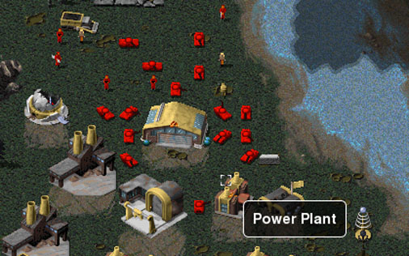
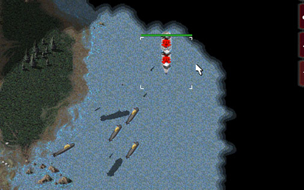

Welcome Back, Commander


OpenRA is an Open Source reimplementation of Command & Conquer: Red Alert.
We've tried to closely follow the spirit of the original game, while modernizing the interface and making use of today's powerful graphics processors. Our emphasis is on the multiplayer experience, but we might support a single-player campaign at some point, too.
OpenRA should run on any modern PC running Windows, Mac OS X or Linux. Requires Microsoft .NET Framework v3.5 SP1 or later; or an up-to-date version of Mono.